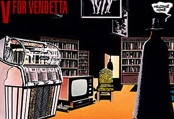

Sobre
HQ
O prazer de ler algo que nos traz tanta informação e suspense, talvez esse seja o motivo do sucesso de V de Vingança, a enfase nas ideias de que o personagem seguia, e sobre o ideal que ele lutava contra, a forma que ela apresentava uma oposição com inteligencia, com convicção, são mais que páginas impressas, são criticas catalogadas, são pensamentos em forma de leitura, simplesmente incrivel.
IMPACTO NA VIDA REAL
V de vingança se tornou histórico, as lutas ali travadas contra o sistema, a forma de que o protagonista se expressava, os mínimos detalhes, a máscara já representava muito, por ser inspirada no rosto de Guy Fawkes, e isso já diz muito do que a obra quer te passar. Lutar contra o governo é mais que apedrejar, xingar, lutar contra o governo é pensar, é ter uma idéia e ser convicto dela, afinal “idéias são a prova de bala”.